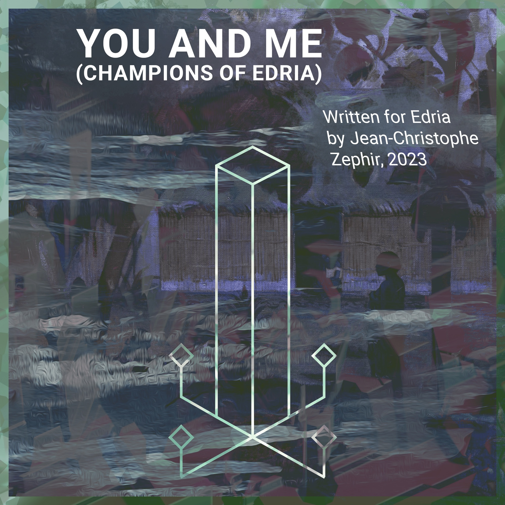
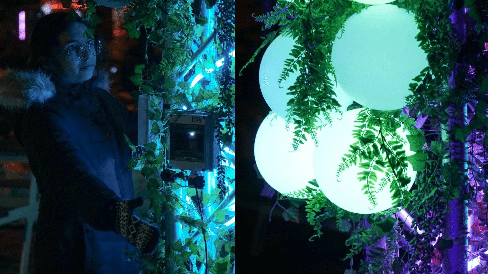
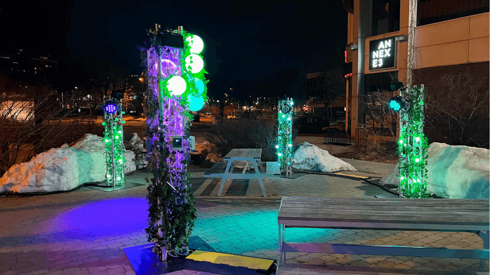

(À propos)
La composition du climax de l'installation Edria, devenue un morceau à part entière.
(Détails)
- Artiste
- No:Art — Jean-Christophe Zephir
- Type
- Single
- Année
- 2023
- Rôle
- Composition, production, mixage



(Le projet)
Lors du climax d'Edria, quand quatre personnes se placent de chaque côté du poteau central, une composition intense et rythmée se déclenche, synchronisée avec l'animation lumineuse. Elle symbolise la culture, la présence humaine et son impact sur l'environnement.
C'est cette composition qui est devenue You and Me (Champions of Edria).